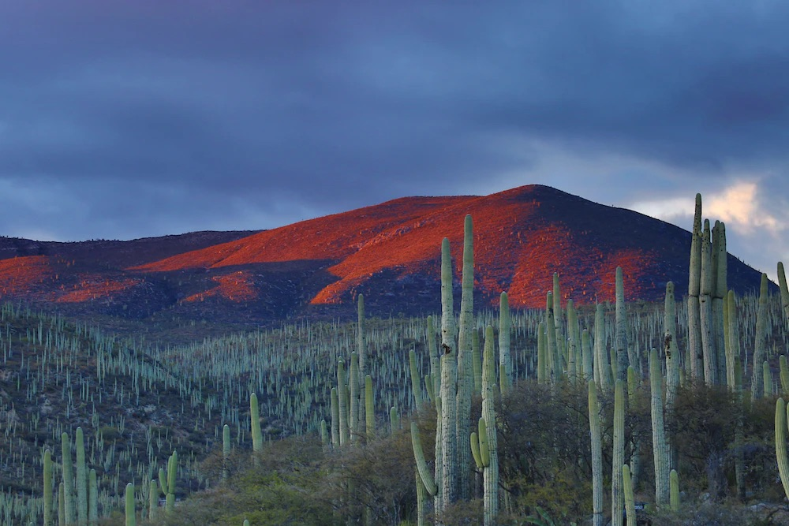

WELCOME
|
This site is dedicated to showcasing some of Mexico's lesser-known yet stunning sights. Explore hidden gems, picturesque landscapes, and culturally rich destinations that often go unnoticed. |
The picture above captures the mesmerizing essence of an evening in the Mexican Tehuacan-Cuicatlan Biosphere Reserve in Zapotitlan Salinas, Puebla. As the sun gracefully descends, casting its warm glow upon the landscape, the serene beauty of this biosphere unfolds. This protected reserve is a sanctuary, boasting a rich tapestry of biodiversity amidst its rugged terrain, inviting exploration and admiration of its natural wonders. |
Ready to start exploring? Use the links above to dive the collection! |